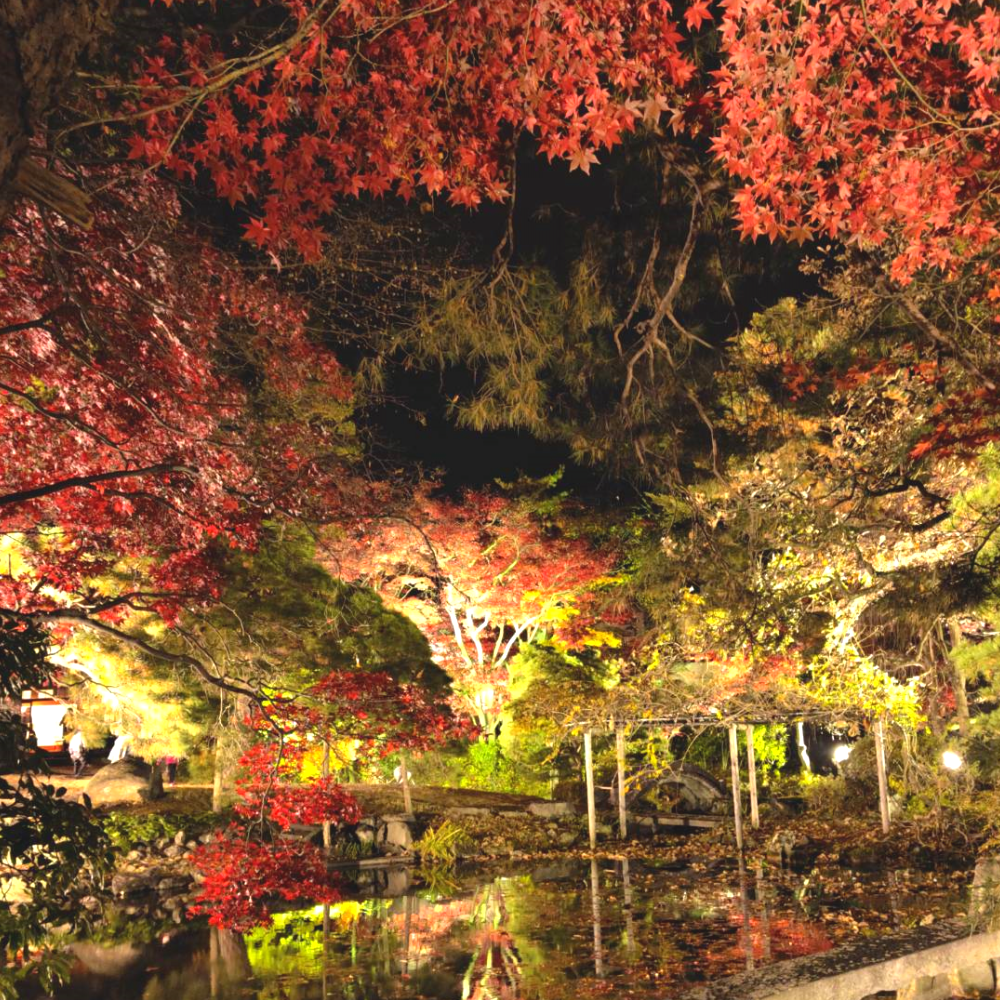
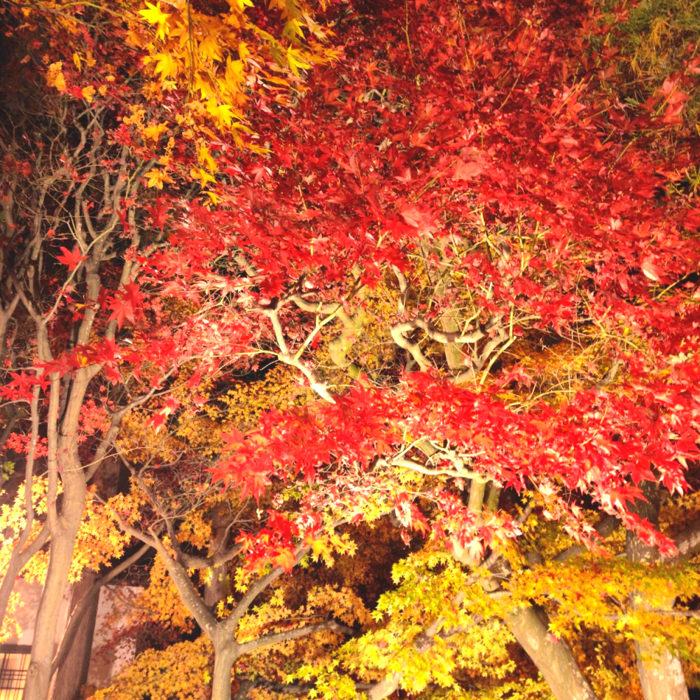
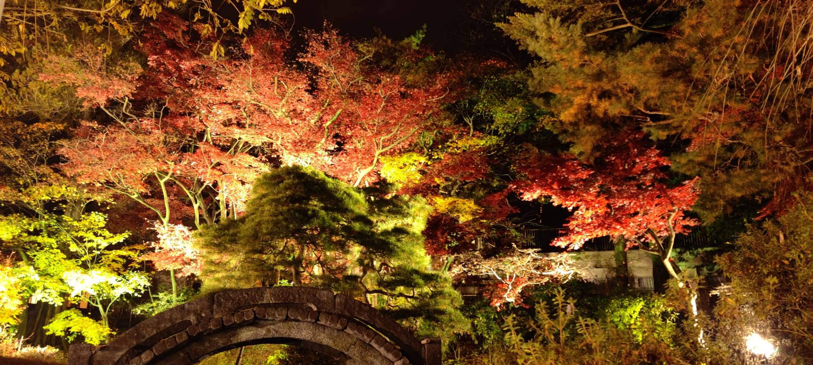
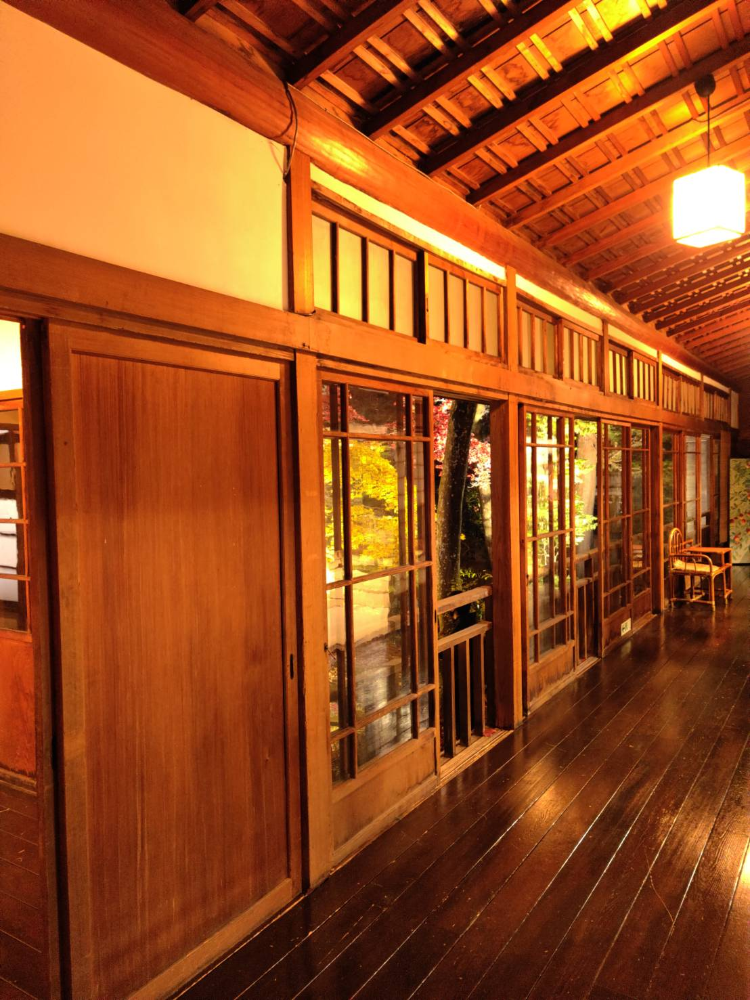

南昌荘




南昌壮は1885年に建てられた庭園で、国登録記念物にも登録されています。
おしゃれな和風建築に秋になると紅葉がとても綺麗な場所です。
11月10日くらいになると、4日間程ライトアップが行わてたくさんの観光客が訪れます。
おしゃれな和風建築に秋になると紅葉がとても綺麗な場所です。
11月10日くらいになると、4日間程ライトアップが行わてたくさんの観光客が訪れます。
このサイトをシェアして欲しいな～!


?instagramの方はコピーしてください
店舗情報
| 店名 | 南昌荘 | |
|---|---|---|
| 営業時間 | 10:00～17:00 | |
| 住所 | 〒020-0875 岩手県盛岡市清水町１３−４６
|
|
| 交通手段 | 岩手県盛岡市清水町13-46 盛岡駅からバス「水道橋行」に乗り「下ノ橋町」で下車。徒歩5分 | |
| 備考 | ※入館料：10人以上は団体割引有り | |